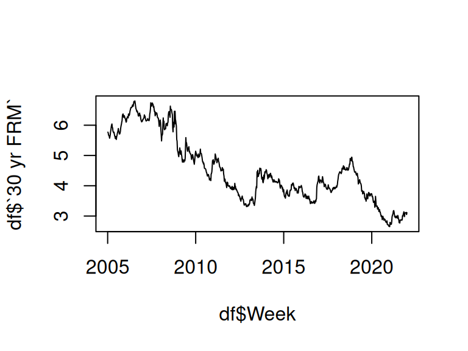
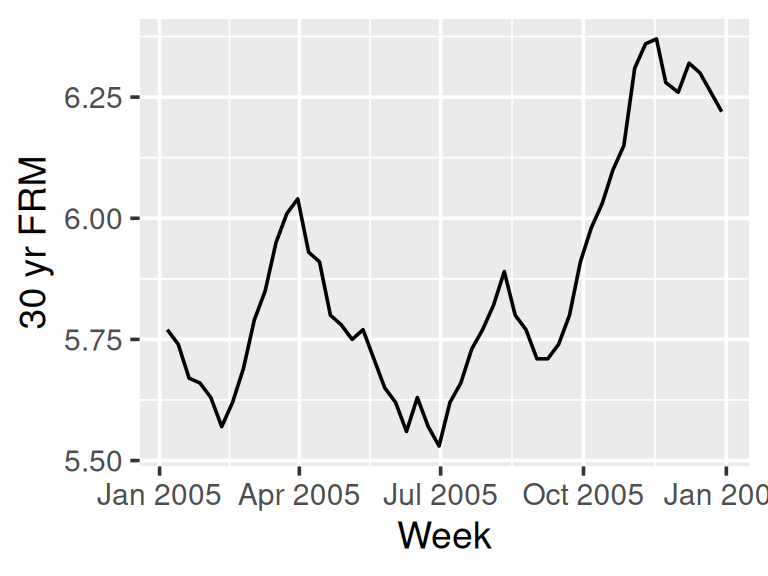
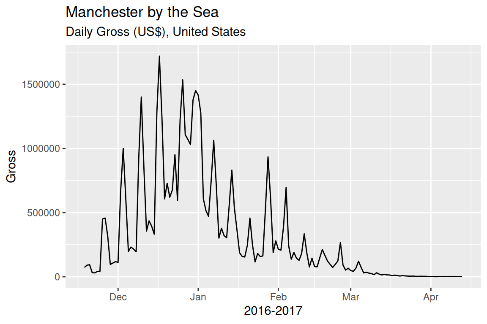
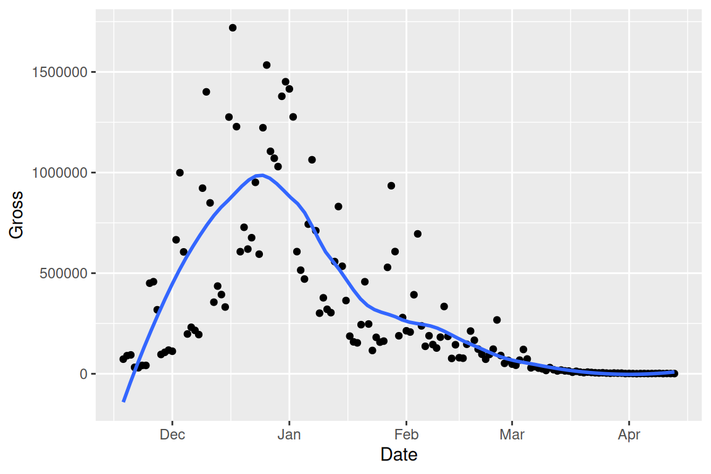

dchar <- "2018-10-12"
ddate <- as.Date(dchar)
class(dchar)[1] "character"class(ddate)[1] "Date"Time series, by definition, is a sequence of data point collected over a certain period of time. In this chapter, we will demonstrate several useful ways of plotting time-series data and how to processing date data type in R.
Since time series analysis looks into how data is changing over time, the very first step is to transform the data into correct format.
You can convert character data to Date class with as.Date():
dchar <- "2018-10-12"
ddate <- as.Date(dchar)
class(dchar)[1] "character"class(ddate)[1] "Date"You can also specifying the format by:
as.Date("Thursday, January 6, 2005", format = "%A, %B %d, %Y")[1] "2005-01-06"For a list of the conversion specifications available in R, see ?strptime.
Here is a list of the conversion specifications for date format from this post

Also, Date class supports calculation between dates:
as.Date("2017-11-02") - as.Date("2017-01-01")Time difference of 305 daysas.Date("2017-11-12") > as.Date("2017-3-3")[1] TRUEThe tidyverse lubridate makes it easy to convert dates that are not in standard format with ymd(), ydm(), mdy(), myd(), dmy(), and dym() (among many other useful date-time functions):
lubridate::mdy("April 13, 1907")[1] "1907-04-13"The lubridate package also provides additional functions to extract information from a date:
today <- Sys.Date()
lubridate::year(today)[1] 2024lubridate::yday(today)[1] 247lubridate::month(today, label = TRUE)[1] Sep
12 Levels: Jan < Feb < Mar < Apr < May < Jun < Jul < Aug < Sep < ... < Declubridate::week(today)[1] 36For time-series data-sets, line plots are mostly used with time on the x-axis. Both base R graphics and ggplot2 “know” how to work with a Date class variable, and label the axes properly:
The data comes from the official website.
library(dplyr)
library(readxl)
library(tidyr)
library(ggplot2)
df <- read_excel("data/historicalweeklydata.xls",
col_types = c("date", "numeric", "numeric",
"numeric"))
plot(df$Week, df$`30 yr FRM`, type = "l") # on the order of years
g<-ggplot(df %>% filter(Week < as.Date("2006-01-01")),
aes(Week, `30 yr FRM`)) +
geom_line() +
theme_grey(14)
g
We can control the x-axis breaks, limits, and labels with scale_x_date(), and use geom_vline() with annotate() to mark specific events in a time series.
The following plot shows a multiple time series of U.S. Mortgage rates.
df2 <- df %>% pivot_longer(cols = -c("Week"), names_to = "TYPE") %>%
mutate(TYPE = forcats::fct_reorder2(TYPE, Week, value))# puts legend in correct order
ggplot(df2, aes(Week, value, color = TYPE)) +
geom_line() +
ggtitle("U.S. Mortgage Rates") + labs (x = "", y = "percent") +
theme_grey(16) +
theme(legend.title = element_blank())
To plot the time series in a specific period of time, use filter() before ggplot:
library(lubridate)
df2010 <- df2 %>% filter(year(Week) == 2010)
ggplot(df2010, aes(Week, value, color = TYPE)) +
geom_line() +
ggtitle("U.S. Mortgage Rates")
Next, as an important part of time series analysis, we want to find the existing patterns of the data. We first starting from plotting the overall long-term trend:
library (readr)
urlfile="https://raw.githubusercontent.com/jtr13/data/master/ManchesterByTheSea.csv"
data<-read_csv(url(urlfile))
g <- ggplot(data, aes(Date, Gross)) +
geom_line() +
ggtitle("Manchester by the Sea", "Daily Gross (US$), United States") +
xlab("2016-2017")
g
Adding a smoother to the data, adjusting the smoothing parameter span = to find a proper smoother which is not overfitting/underfitting:
g <- ggplot(data, aes(Date, Gross)) + geom_point()
g + geom_smooth(method = "loess", span = .5, se = FALSE)
Mark the pattern by high-lighting the data on very Saturday:
g <- ggplot(data, aes(Date, Gross)) +
geom_line() +
ggtitle("Manchester by the Sea", "Daily Gross, United States")
saturday <- data %>% filter(wday(Date) == 7)
g +
geom_point(data = saturday, aes(Date, Gross), color = "deeppink")
Another way is to use facet to show the cyclical pattern:
ggplot(data, aes(Date, Gross)) +
geom_line(color = "grey30") + geom_point(size = 1) +
facet_grid(.~wday(Date, label = TRUE)) +
geom_smooth(se = FALSE)
Also, basic R can plot the decomposed time series automatically. This method is used to study the trend, seasonal effect on data with at least 2 periods. For additive components, use type = "additive".
tsData <- EuStockMarkets[, 2]
decomposedRes <- decompose(tsData, type="mul")
plot (decomposedRes)
When making comparisons on multi-line plots, index is a way of scaling the data: Each value is divided by the first value for that group and multiplied by 100.
urlfile="https://raw.githubusercontent.com/jtr13/data/master/WA_Sales_Products_2012-14.csv"
sale<-read_csv(url(urlfile))
sale$Q <- as.numeric(substr(sale$Quarter, 2, 2))
# convert Q to end-of-quarter date
sale$Date <- as.Date(paste0(sale$Year, "-",as.character(sale$Q*3),"-30"))
Methoddata <- sale %>%
mutate(Revenue = Revenue/1000000) %>%
group_by(Date,`Order method type`) %>%
summarize(Revenue = sum(Revenue)) %>%
ungroup() %>%
group_by(`Order method type`) %>%
mutate(index = round(100*Revenue/Revenue[1], 2)) %>%
ungroup()
g <- ggplot(Methoddata, aes(Date, index,color = `Order method type`)) +
geom_line(aes(group = `Order method type`)) +
scale_x_date(limits = c(as.Date("2012-02-01"), as.Date("2014-12-31")), date_breaks = "6 months", date_labels = "%b %Y")
g